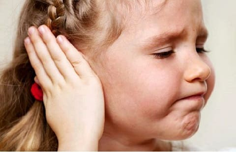
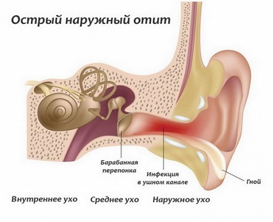
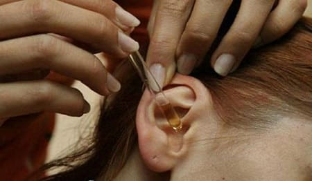

Наружный отит — это инфекция наружного слухового прохода в отличие от инфекции среднего уха, которая представляет собой воспаление в полости за барабанной перепонкой. Кожа наружного слухового прохода содержит железы, в нормальном состоянии вырабатывающие защитное воскообразное покрытие, которое отталкивает и воду, и кислоту и которое может задержать вторгающиеся бактерии. Вода во время плавания и ныряния может смыть это защитное покрытие и создать теплую влажную среду, которая станет рассадником для бактерий. С большой вероятностью ребенок может получить наружный отит, плавая в теплой или в грязной воде, где содержится больше бактерий, чем в более прохладной или хлорированной.
СИМПТОМЫ
Нижеперечисленные признаки указывают на то, что у вашего ребенка, возможно, наружный отит:
• ухо начинает зудеть или болеть вскоре после плавания;
• боль начинается через 1—2 дня после плавания и быстро усиливается;
• из наружного слухового прохода выделяется неприятно пахнущая жидкость, которая напоминает слизистое отделяемое при насморке;
• попробуйте тест «оттягивания мочки уха»: потяните за мочку уха или нажмите на маленький отросток, который прикрывает наружный слуховой проход — это приведет к его сжатию. Если ваш ребенок вздрагивает или жалуется на боль, вполне возможно, что у него наружный отит.
ПРОФИЛАКТИКА
Не тратьтесь на затычки для ушей и ватные тампоны; они, как правило, неэффективны. Они не только протекают, но и вдавливают серу дальше в глубь прохода. Вот несколько эффективных способов предотвратить отит:
• избегайте купания в загрязненной воде;
• не позволяйте ребенку опускать голову под воду в горячей ванне. Это способствует развитию наружного отита;
Как отличить наружный отит от среднего. Инфекция среднего уха, как правило, следует за или сопровождается симптомами ОРЗ, такими как насморк, слезотечение и невысокая лихорадка. Боль в среднем ухе, как правило, усиливается ночью, когда ребенок лежит, и тест на оттягивание мочки уха обычно дает отрицательные результаты. Иногда воспаление в наружном слуховом проходе может развиться вследствие инфекции среднего уха, если инфицированная жидкость прорвется через барабанную перепонку в наружный слуховой проход. В этом случае вы можете увидеть жидкость, вытекающую из наружного слухового прохода, но ребенок «чувствует себя лучше», поскольку барабанная перепонка прорвалась и давление на среднее ухо уменьшилось. |

Смешайте в равных частях столовый уксус (6—9%) и воду. Уксус содержит кислоту, которая дезинфицирует слуховой проход и восстанавливает кислую среду, которая была вымыта из уха. Попросите ребенка лечь и аккуратно оттяните ухо вверх и назад, чтобы выпрямить проход. Используя пипетку, капните по меньшей мере 5 капель уксусного раствора в ухо. Оставьте его для воздействия в ухе на минуту, затем дайте ему вытечь. Повторите процедуру со вторым ухом. Применяйте это промывание уксусом после каждого купания. Если это не предотвращает инфекции, попробуйте смесь из 1 части уксуса и 1 части медицинского спирта. Это может подействовать лучше. Вы также можете купить средство для профилактики наружного отита в аптеке.

ЛЕЧЕНИЕ
Лучшее «лечение» — это профилактика с использованием описанных выше средств. Но если у вашего ребенка развился наружный отит:
Здоровье ребенка от докторов Сирс / Сирс У. и др.